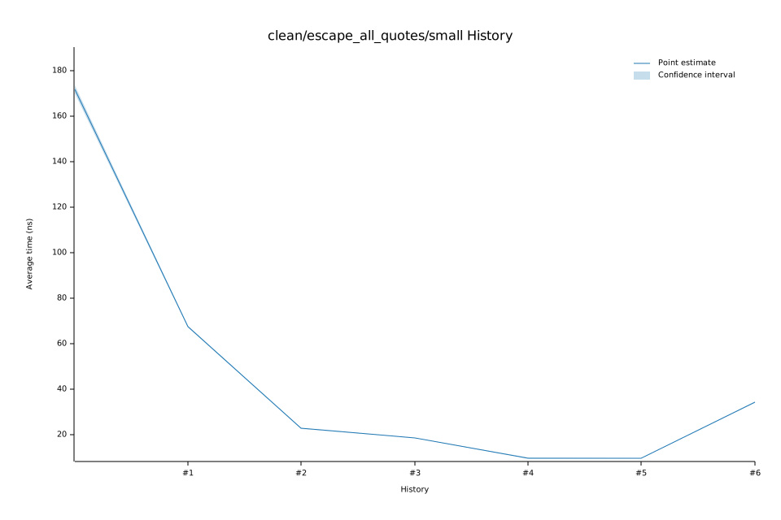

# 92023-01-14T18:51:48-08:00
|
Lower Bound |
Estimate |
Upper Bound |
| Value: |
23.54ns |
23.66ns |
23.79ns |
| Throughput: |
2349.94MiB/s |
2338.29MiB/s |
2325.14MiB/s |
| Change in Value: |
-2.1962% |
-0.9566% |
+0.3421% |
| Change in Throughput: |
+2.2456% |
+0.9658% |
-0.3409% |
Change within noise threshold.
# 82023-01-14T18:23:25-08:00
|
Lower Bound |
Estimate |
Upper Bound |
| Value: |
23.61ns |
23.74ns |
23.88ns |
| Throughput: |
2342.67MiB/s |
2330.07MiB/s |
2316.40MiB/s |
| Change in Value: |
-0.5734% |
+0.9054% |
+2.2233% |
| Change in Throughput: |
+0.5767% |
-0.8973% |
-2.1750% |
Change within noise threshold.
# 72023-01-13T17:16:03-08:00
|
Lower Bound |
Estimate |
Upper Bound |
| Value: |
23.46ns |
23.59ns |
23.73ns |
| Throughput: |
2357.45MiB/s |
2344.50MiB/s |
2330.50MiB/s |
| Change in Value: |
-32.183% |
-31.549% |
-30.683% |
| Change in Throughput: |
+47.456% |
+46.090% |
+44.264% |
No change in performance detected.
# 62023-01-13T17:12:37-08:00
|
Lower Bound |
Estimate |
Upper Bound |
| Value: |
34.44ns |
34.59ns |
34.74ns |
| Throughput: |
1606.26MiB/s |
1599.29MiB/s |
1592.32MiB/s |
| Change in Value: |
+248.20% |
+251.27% |
+254.01% |
| Change in Throughput: |
-71.281% |
-71.531% |
-71.752% |
No change in performance detected.
# 52023-01-13T17:07:22-08:00
|
Lower Bound |
Estimate |
Upper Bound |
| Value: |
9.79ns |
9.82ns |
9.85ns |
| Throughput: |
5651.74MiB/s |
5632.99MiB/s |
5613.61MiB/s |
| Change in Value: |
-0.9272% |
+0.2632% |
+1.4898% |
| Change in Throughput: |
+0.9358% |
-0.2625% |
-1.4679% |
Change within noise threshold.
# 42023-01-13T17:02:01-08:00
|
Lower Bound |
Estimate |
Upper Bound |
| Value: |
9.79ns |
9.96ns |
10.19ns |
| Throughput: |
5647.18MiB/s |
5550.81MiB/s |
5430.76MiB/s |
| Change in Value: |
-48.779% |
-47.989% |
-47.157% |
| Change in Throughput: |
+95.232% |
+92.266% |
+89.239% |
No change in performance detected.
# 32023-01-13T16:58:38-08:00
|
Lower Bound |
Estimate |
Upper Bound |
| Value: |
18.62ns |
18.73ns |
18.88ns |
| Throughput: |
2971.15MiB/s |
2952.64MiB/s |
2930.38MiB/s |
| Change in Value: |
-18.099% |
-17.079% |
-15.812% |
| Change in Throughput: |
+22.099% |
+20.596% |
+18.782% |
No change in performance detected.
# 22023-01-13T16:56:39-08:00
|
Lower Bound |
Estimate |
Upper Bound |
| Value: |
22.81ns |
22.90ns |
23.02ns |
| Throughput: |
2424.59MiB/s |
2414.91MiB/s |
2402.87MiB/s |
| Change in Value: |
-66.376% |
-66.106% |
-65.704% |
| Change in Throughput: |
+197.41% |
+195.04% |
+191.58% |
No change in performance detected.
# 12023-01-13T16:54:38-08:00
|
Lower Bound |
Estimate |
Upper Bound |
| Value: |
67.42ns |
67.69ns |
68.03ns |
| Throughput: |
820.42MiB/s |
817.11MiB/s |
813.10MiB/s |
| Change in Value: |
-60.466% |
-60.064% |
-59.670% |
| Change in Throughput: |
+152.95% |
+150.40% |
+147.96% |
No change in performance detected.
# 02023-01-13T16:52:46-08:00
|
Lower Bound |
Estimate |
Upper Bound |
| Value: |
170.14ns |
171.78ns |
173.58ns |
| Throughput: |
325.11MiB/s |
322.00MiB/s |
318.65MiB/s |